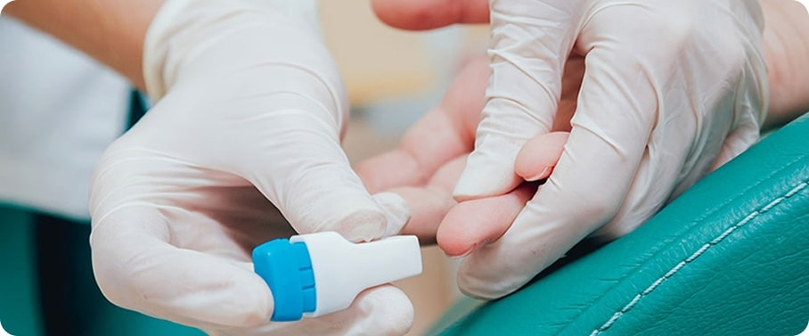
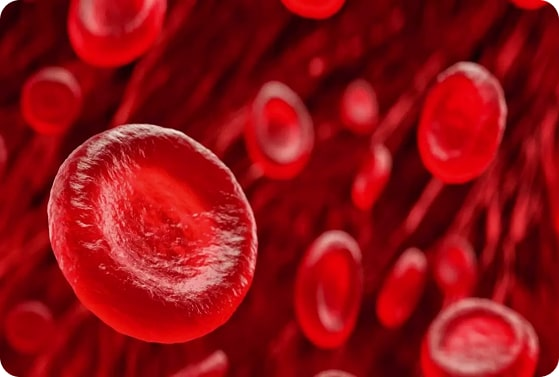

Скорость оседания эритроцитов (СОЭ)
Определение скорости оседания эритроцитов, или СОЭ, входит в число базовых лабораторных исследований и обычно проводится вместе с общим анализом крови. В комплексе с другими данными СОЭ может интерпретироваться как маркер воспалительных процессов или некоторых заболеваний.
Кровь — биологическая жидкость, которая состоит из плазмы и циркулирующих в ней форменных элементов: эритроцитов, лейкоцитов и тромбоцитов.
Пока кровь течёт по сосудам, все её составляющие постоянно перемешиваются между собой. Однако, если кровь оставить в покое, она разделится на плазму, которая останется вверху, и эритроциты (красные кровяные клетки), которые осядут. Скорость, с которой этот процесс происходит, называется скоростью оседания эритроцитов (СОЭ).

Если состав крови меняется под влиянием каких-то процессов, то скорость оседания эритроцитов отклоняется от нормы.
Изменение СОЭ в сравнении с нормой может быть признаком воспаления или некоторых заболеваний.
Однако уровень СОЭ может изменяться не только из-за патологических процессов, но и под влиянием некоторых физиологических особенностей. Так, СОЭ увеличивается во время беременности и при менструации. У женщин этот показатель в среднем выше, чем у мужчин.
Скорость оседания эритроцитов — неспецифический маркер: нельзя поставить диагноз, опираясь только на его результаты. Поэтому исследование СОЭ часто проводят вместе с общим анализом крови и лейкоцитарной формулой при профилактическом обследовании.
Как подготовиться к анализу на СОЭ
Исследование скорости оседания эритроцитов не требует специальной подготовки. Достаточно соблюдать правила, которые рекомендованы при большинстве анализов крови.
Правила подготовки к анализу:
- взятие крови выполняется с утра, натощак. Оптимальное время — с 8 до 11 часов;
- как минимум за сутки до теста нужно исключить алкоголь и интенсивные физические нагрузки;
- за 8 часов до анализа можно поужинать лёгкой, нежирной пищей;
- за 1–2 часа до анализа желательно не курить, избегать стресса и физического напряжения (бег, быстрый подъём по лестнице);
- за 15 минут до взятия крови полезно немного посидеть в лабораторном отделении, отдышаться, успокоиться.
Что может повлиять на результат исследования
На результат анализа могут повлиять лекарства и медицинские процедуры.
Не следует сдавать кровь сразу после физиотерапевтических процедур, инструментального обследования, рентгенологического или ультразвукового исследования, массажа.
Лучше всего выполнять исследование крови до начала приёма лекарственных препаратов или через 10–14 дней после их отмены. О принимаемых лекарствах следует предупредить медсестру, а также врача, который выполняет диагностику или назначает лечение.
Женщинам следует учесть фазу менструального цикла: во время месячных СОЭ может повыситься.